“Let There Be Light” Festival
A landing page for a week-long festival inspired by the Jewish creation story.
Developed as a school project guided by Lior Gez.
Creation
The visual language combines photographic collage and rough cutout edges, imagining the creation of the world as an artist assembling a scene from paper cutouts.
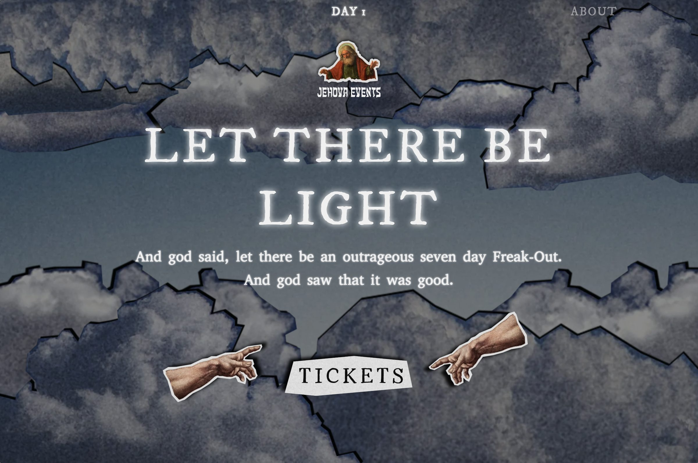
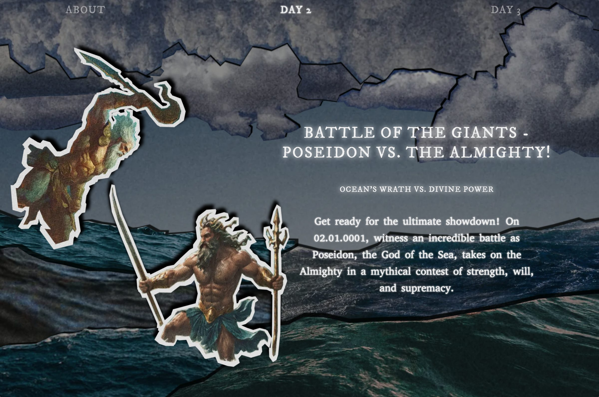
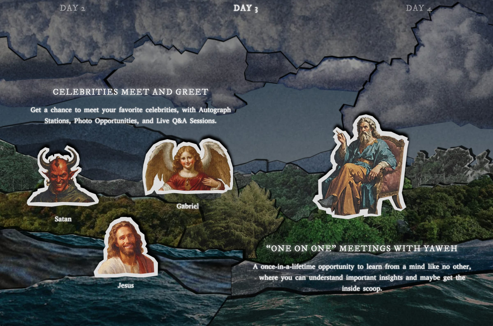
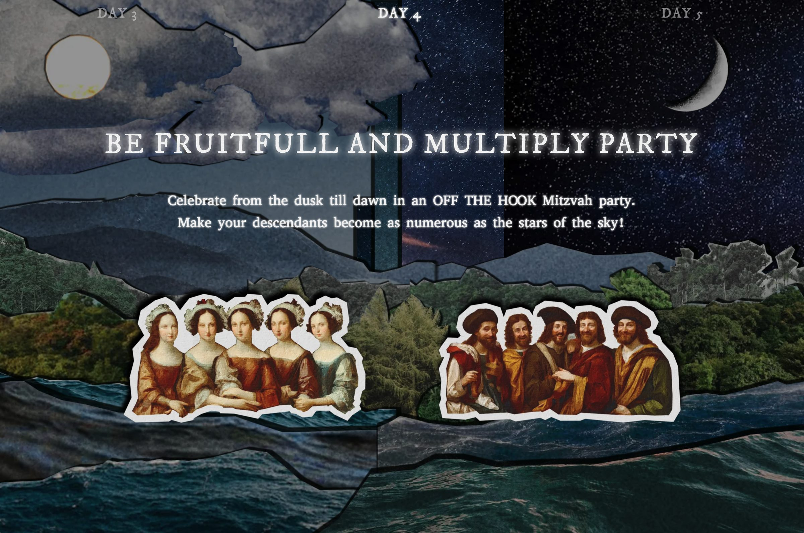
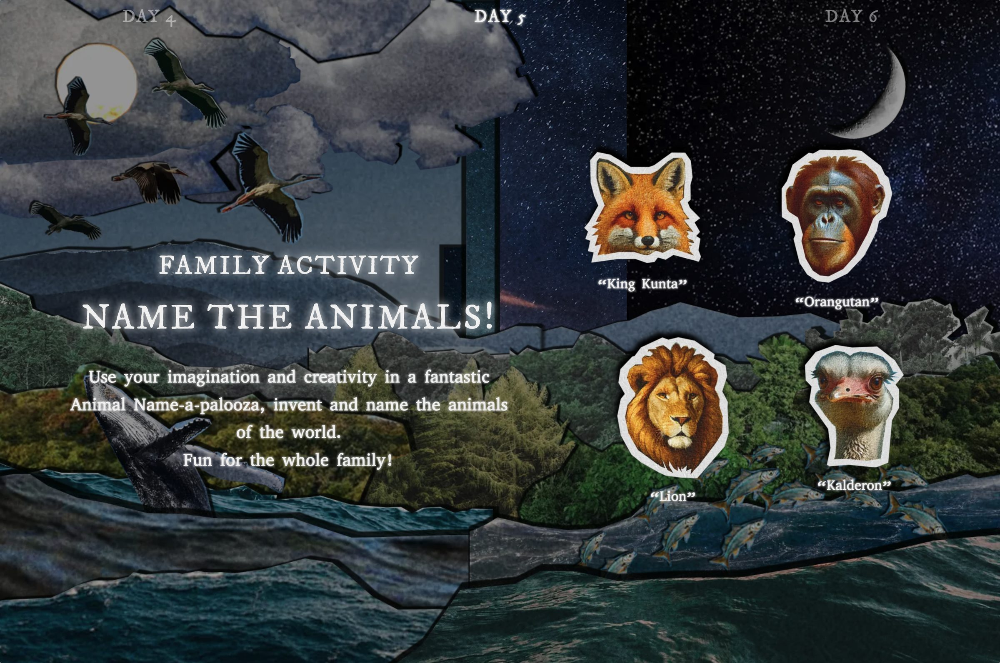
Each day of the festival is its own screen. Moving between them, the cutout layers slide apart and reassemble, so the world is built and rebuilt in front of the visitor as they scroll through the week.
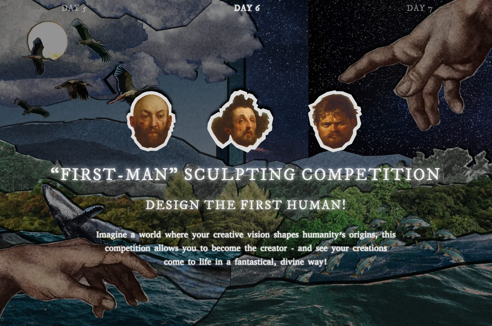
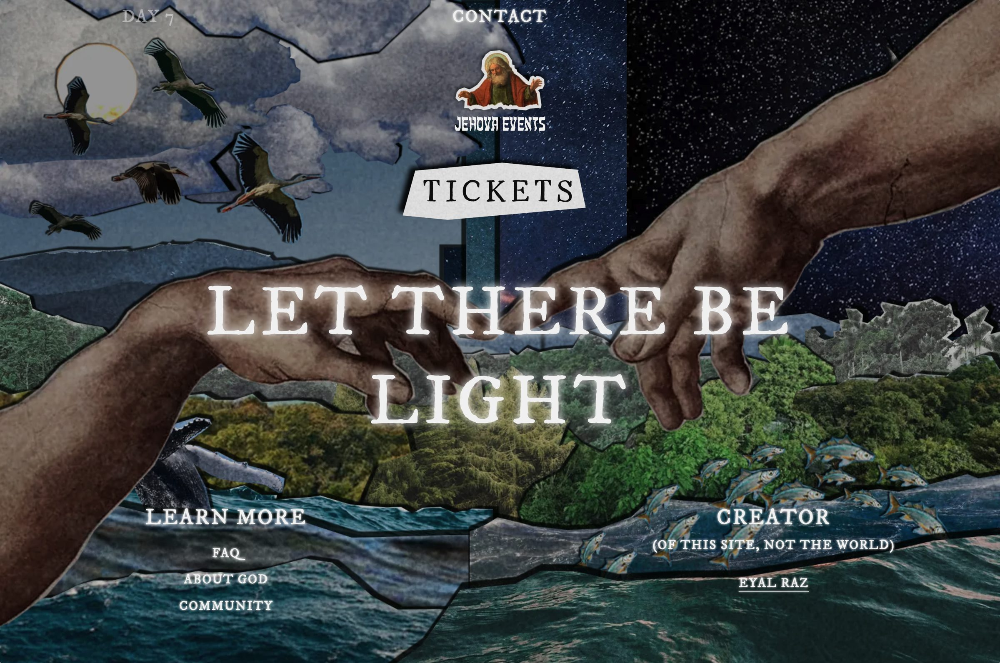
Companion App
A companion app carries the festival onto the phone. It holds the schedule and the camps, and borrows the landing page's collage so the two feel like one piece.
Early Draft Comparison
Early drafts next to the finished screens. Drag the handle to compare.
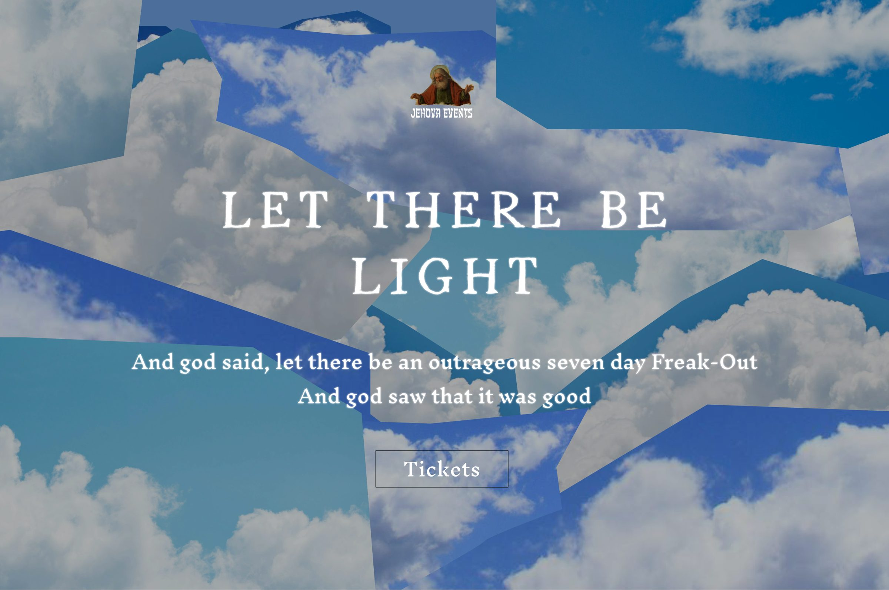
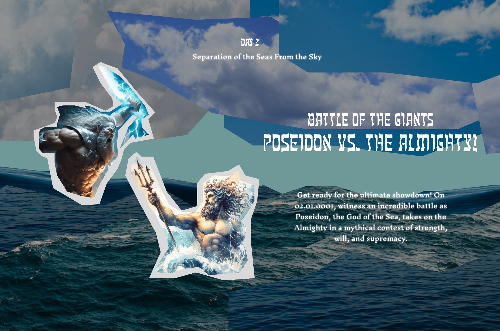
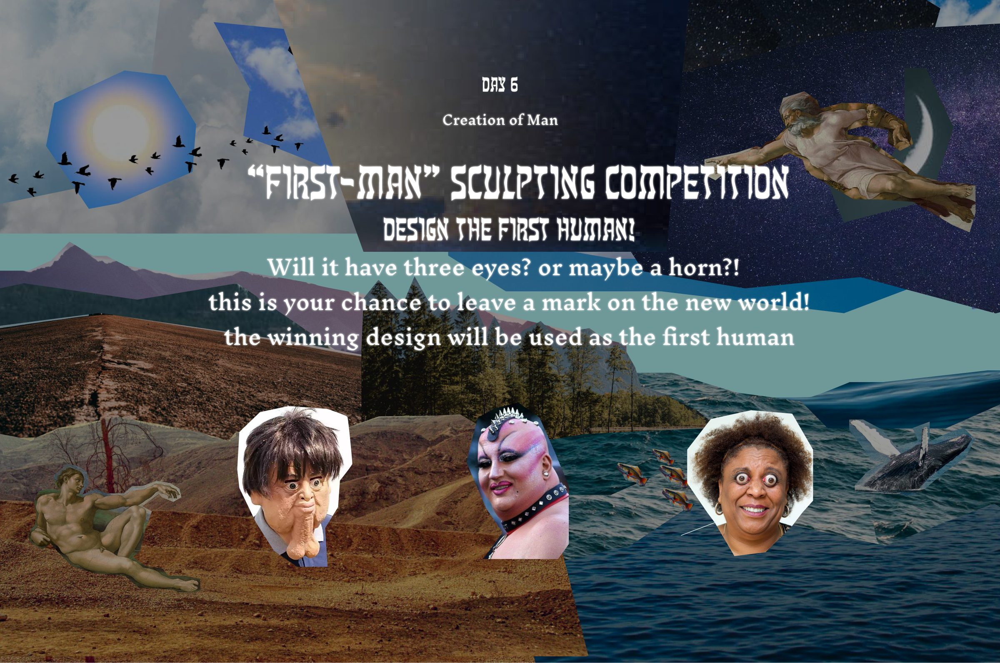
Design & Mechanics
The background elements are digital cutouts of terrain photographs, with added grain and drop shadow effects to simulate a paper-like texture.
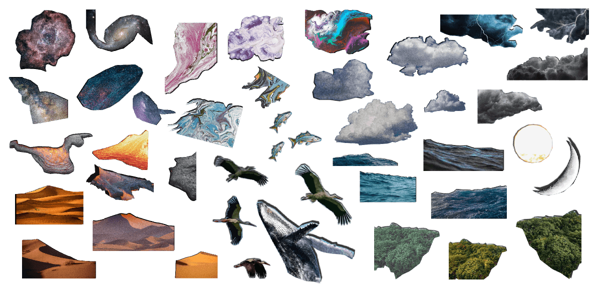
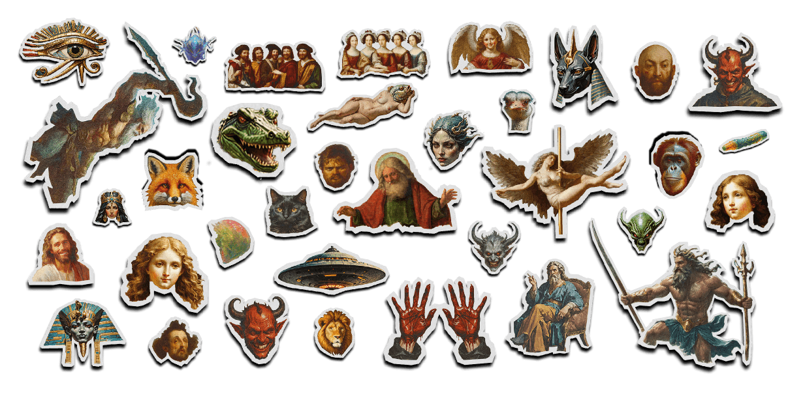
The foreground figures are AI-generated, Renaissance-style drawings composited within a paper border to stand out from the background.
Background, midground and figures sit on separate layers that move at different speeds, so the scene gains depth and the cutouts read as paper rather than a flat image.